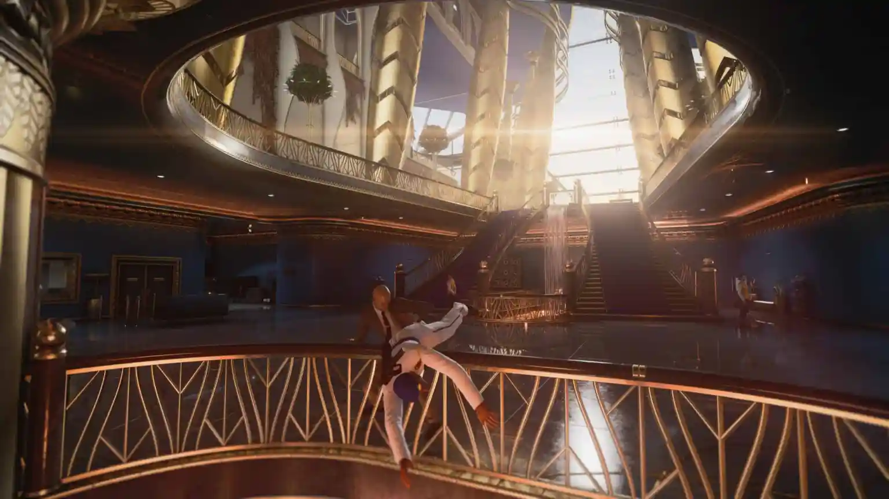

អការពិនិត្យឡើងវិញរបស់ Hitman 3 - ការសន្និដ្ឋានដ៏គួរឱ្យរំភើប
ដោយ៖ Julian Harrisចេញផ្សាយ៖ ថ្ងៃទី 19 ខែមករា ឆ្នាំ 2021នៅ ម៉ោង 3:52 រសៀល
Hitman បានក្លាយជាអ្នកគាំទ្រដែលចូលចិត្តនៅក្នុងប្រភេទបំបាំងកាយអស់ជាច្រើនឆ្នាំមកនេះ ហើយ IO Interactive បានចំណាយពេលអស់ជាច្រើនឆ្នាំដើម្បីកែលម្អ និងវិវឌ្ឍន៍ការលេងហ្គេមរបស់ Hitman ។ ជាមួយនឹងហ្គេមដូចជា Splinter Cell រកកន្លែងណាមិនឃើញ Hitman ត្រូវបានគ្រងរាជ្យនៅពេលនិយាយអំពីការធ្វើឃាត និងចារកម្ម។ Hitman 3 ត្រូវបានកំណត់ជាការសន្និដ្ឋានចំពោះរឿងរបស់ភ្នាក់ងារ 47 និងការសន្និដ្ឋានរបស់ IO Interactive ជាមួយនឹងប្រភេទ។ ក្នុងនាមជាមនុស្សម្នាក់ដែលបានរីកចម្រើនក្នុងការពេញចិត្តចំពោះប្រភេទបំបាំងកាយយូរ ៗ ទៅ Hitman 3 គឺជាកន្លែងដ៏ល្អមួយដើម្បីចាប់ផ្តើមប្រសិនបើអ្នកជាមនុស្សថ្មី។
VIDEO
Hitman 3 មានគោលបំណងចងចុងបញ្ចប់រលុងជាច្រើននៅក្នុងសិទ្ធិផ្តាច់មុខ។ ប្រសិនបើអ្នកមិនទាន់បានលេងហ្គេមមុនទេ អ្នកអាចលោតចូលបាន។ អ្នកមានជម្រើសពីរនៅទីនេះ។ អ្នកអាចលេងហ្គេមមុនៗ ឬគ្រាន់តែមើលការសង្ខេបនៃរឿងរហូតដល់ចំណុចនេះ។ ដោយមិនធ្វើឱ្យខូចច្រើនពេកទេ នៅក្នុង Hitman 3 ភ្នាក់ងារ 47 បានចូលរួមជាមួយមិត្តភ័ក្តិដ៏យូររបស់គាត់ Lucas Grey ដើម្បីលុបបំបាត់ដៃគូរបស់ Providence ។ អ្នកជួបប្រទះការប៉ះទង្គិចមួយចំនួននៅតាមផ្លូវ ប៉ុន្តែយើងទាំងអស់គ្នាដឹងថាភ្នាក់ងារ 47 មិនមានបញ្ហាក្នុងការសម្របខ្លួនទៅនឹងស្ថានភាពណាមួយឡើយ។
ក្រាហ្វិក និងការអនុវត្ត
ហ្គេម Hitman ត្រូវបានគេស្គាល់ថាមើលទៅអស្ចារ្យ ហើយ Hitman 3 មិនមានករណីលើកលែងនោះទេ។ យើងត្រូវបានផ្តល់ច្បាប់ចម្លងការពិនិត្យឡើងវិញរបស់យើងនៅលើ Xbox Series X ហើយ Hitman ពិតជាប្រើប្រាស់ថាមពលរបស់វា។ បរិស្ថានពិតជាភ្លឺនៅទីនេះ (គ្មានចេតនាទេ)។ ព័ត៌មានលម្អិតអំពីវត្ថុនៅក្នុងបរិស្ថានគឺពិតជាគួរអោយចាប់អារម្មណ៍ ហើយពន្លឺពិតជាបន្ថែមការលេចចេញនៅក្នុងសេណារីយ៉ូផ្សេងៗ។ ជាមួយនឹងទំនិញទាំងអស់ដែលអ្នកអាចយកបាន គ្មានអ្វីហាក់ដូចជានៅក្រៅកន្លែងនោះទេ។ នៅក្នុងទិដ្ឋភាពដែលមានមនុស្សច្រើនដែលមានការផ្លាស់ប្តូរជាប្រចាំនៃពន្លឺ និងបរិស្ថាន ខ្ញុំមិនដែលបានកត់សម្គាល់ឃើញថាមានការគាំង ឬបន្ថយល្បឿនណាមួយទេ។ ដោយមានតួអក្សរផ្សេងៗគ្នាជាច្រើន និង AI របស់ពួកគេ លាយឡំជាមួយធរណីមាត្រដ៏ស្មុគស្មាញ ហ៊ី តមែនហ្គេមត្រូវបានគេដឹងថាមានធនធានច្រើន។ គំរូតួអក្សររបស់ភ្នាក់ងារ 47 មិនបានផ្លាស់ប្តូរច្រើនពេកទេ។ សម្រាប់អ្នកដែលមានភីកសែលទាំងនោះនៅទីនោះ វាយនភាពនៃសម្លៀកបំពាក់គឺលម្អិតជាងច្រើន។ រឿងមួយទៀតដែលមនុស្សអាចកត់សម្គាល់បានប្រសិនបើពួកគេបានលេងហ្គេមនេះមួយរយៈនោះគឺថា Agent 47 មើលទៅក្មេងជាងបន្តិច។ មិនមានការពន្យល់សម្រាប់រឿងនេះទេ។ វាអាចគ្រាន់តែជាការផ្លាស់ប្តូរបន្តិចបន្តួចចំពោះទ្រព្យសម្បត្តិ។ ខ្ញុំមិនគិតថានេះជាអ្វីដែលនឹងរំខានដល់កីឡាករភាគច្រើននោះទេ។
ការលេងហ្គេម - វាអាស្រ័យលើអ្នក។
ឈ្មោះហ្គេមនៅក្នុង Hitman តែងតែមានវិធីផ្សេងៗគ្នាដែលអ្នកអាចលុបបំបាត់គោលដៅរបស់អ្នក។ នេះត្រូវបានគេហៅថាជាស្នាមរន្ធនៅក្នុងការលេងហ្គេមថ្មីបំផុត។ សម្រាប់អ្នកដែលអាចនឹងថ្មីចំពោះសិទ្ធិផ្តាច់មុខ មានពេលខ្លះដែលបេសកកម្មនីមួយៗអាចត្រូវបានណែនាំបន្តិចបន្តួច។ ជាមួយនឹងការរុករកបន្ថែមទៀតនៃផែនទីនីមួយៗ អ្នករកឃើញអាវុធ និងឧបករណ៍ផ្សេងៗ។ អ្នកក៏ស្តាប់នៅក្នុងការសន្ទនាផ្សេងៗគ្នា និងស្វែងយល់ពីទម្លាប់នៃតួអក្សរផ្សេងៗគ្នាដែលនឹងធ្វើឱ្យអ្នកកាន់តែឆ្លាតវៃដែលអាចបើកលទ្ធភាពជាច្រើន។ អ្នករៀនកាន់តែច្រើន កន្លែងលេងកាន់តែបើកសម្រាប់អ្នក។ ចំនួននៃជម្រើសនៅក្នុង Hitman 3គឺជាការផ្លាស់ប្តូរដ៏ធំបំផុតមួយពីហ្គេមមុនៗ។ ឥឡូវនេះមានកន្លែងបន្ថែមទៀតដើម្បីសង្គ្រោះពីកំហុសដែលអ្នកអាចនឹងធ្វើ។ វាមិនត្រឹមតែបន្ថែមភាពសម្បូរបែបដល់ការលេងហ្គេមប៉ុណ្ណោះទេ ប៉ុន្តែវាអនុញ្ញាតឱ្យមានកន្លែងសម្រាប់មនុស្សថ្មីក្នុងហ្គេមដើម្បីរៀន និងពិសោធន៍។

ការលេងហ្គេម - វាអាស្រ័យលើអ្នក។
ខ្ញុំត្រូវតែនិយាយជារួម Hitman 3'sយុទ្ធនាការមិនយូរប៉ុន្មានទេ។ នេះជាការពិតជាពិសេសប្រសិនបើអ្នកជាជើងចាស់នៃស៊េរី។ ជាមួយនឹងរបៀបដែលហ្គេមត្រូវបានរៀបចំ នេះប្រហែលជាមិនមែនជាបញ្ហាសម្រាប់អ្នកលេងទាំងអស់នោះទេ។ ដូចដែលខ្ញុំបាននិយាយពីមុន នៅពេលអ្នកធ្វើផ្លូវរបស់អ្នកតាមរយៈផែនទីនីមួយៗ អ្នករកឃើញវិធីថ្មីដើម្បីបំពេញគោលបំណងរបស់អ្នក។ រាល់ពេលដែលអ្នកបំពេញបេសកកម្ម អ្នកនឹងដោះសោការក្លែងបន្លំ ឧបករណ៍ និងអាវុធផ្សេងៗ ដែលអ្នកអាចនាំយកទៅក្នុងបេសកកម្ម។ ប្រសិនបើអ្នកសម្រេចចិត្តត្រឡប់ទៅ និងលេងបេសកកម្មឡើងវិញ វានឹងបន្ថែមម៉ោងលេងរបស់អ្នក។ ដូចគ្នានេះផងដែរ មានបញ្ជីសកម្មភាពផ្សេងៗគ្នាដែលអ្នកអាចធ្វើ និងវត្ថុដែលអ្នកអាចរកបានពេញមួយបេសកកម្ម។ អ្នកអាចចូលប្រើវាបានតែពេលអ្នកបញ្ចប់បេសកកម្ម ដូច្នេះវាមិនមានឥទ្ធិពលលើការលេងដំបូងរបស់អ្នក។ ធាតុអាចផ្លាស់ប្តូររបៀបដែលបេសកកម្មនីមួយៗដំណើរការយ៉ាងខ្លាំង។ កត្តាទាំងអស់នេះបានធ្វើឱ្យខ្ញុំជំរុញចិត្តឱ្យបន្តលេងហ្គេម។ ផងដែរហ្គេម Hitman អ្នកនឹងអាចចូលដំណើរការបេសកកម្មពី Hitman 1 & 2 ។ នៅពេលដែលអ្នកបញ្ចប់បេសកកម្មរឿងសំខាន់ ហ្គេមនឹងក្លាយទៅជាកន្លែងលេងនៃការរុករក និងពិសោធន៍។
ខ្ញុំមិនតែងតែជាអ្នកគាំទ្រដ៏ធំបំផុតនៃ ស៊េរី Hitman នោះទេ ដោយសារតែខ្ញុំអាក្រក់ខ្លាំងចំពោះប្រភេទបំបាំងកាយ។ យូរ ៗ ទៅ IO Interactive បានធ្វើការងារដ៏អស្ចារ្យមួយបើកពិភពលោករបស់ខ្លួន។ Hitman ឥឡូវនេះបានក្លាយទៅជាអាចចូលដំណើរការបានកាន់តែច្រើនខណៈពេលដែលរក្សាបាននូវបញ្ហាប្រឈមរបស់ខ្លួន។ ដូចរាល់ដង ហ្គេមមើលទៅ និងមានអារម្មណ៍ល្អណាស់។ ការគ្រប់គ្រង និងមេកានិកនៃការលេងហ្គេមផ្សេងៗគ្នា មានភាពងាយស្រួលក្នុងការរៀនសម្រាប់អ្នកដែលមានប្រភេទថ្មី។ ខ្ញុំពិតជារីករាយដែល IO Interactive សម្រេចចិត្តទៅជាមួយរបៀបរឿងពិតនៅក្នុង Hitman 3. ខ្លឹមសារនៃវគ្គនេះមិនអាក្រក់ទេ ប៉ុន្តែខ្ញុំគិតថាការនិយាយឡើងវិញចុងក្រោយនៅក្នុងស៊េរីនេះសមនឹងទទួលបានសាច់រឿងពិត។ IO Interactive ពិតជាបានបង្ហាញពីអ្វីដែលស្ទូឌីយ៉ូរបស់ពួកគេមានសមត្ថភាពនៅពេលនិយាយអំពីក្រាហ្វិក ការរចនាកម្រិត និងសាច់រឿង។ ជាមួយនឹងមាតិកាទាំងអស់ដែលបានរួមបញ្ចូលនៅក្នុងកញ្ចប់នេះ នេះគឺជាកន្លែងដ៏ល្អសម្រាប់អ្នកលេងថ្មីដើម្បីលោតចូល។ ខ្ញុំមិនអាចរង់ចាំមើលអ្វីដែលពួកគេមាននៅក្នុងហាងសម្រាប់ហ្គេម 007 របស់ពួកគេ។
Hitman 3 នឹងមានលក់នៅថ្ងៃទី 20 ខែមករា សម្រាប់គ្រប់វេទិកាទាំងអស់។